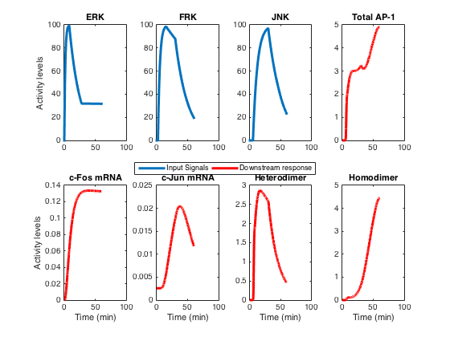

README
Activator protein 1 (AP-1) transcriptional regulatory model for brainstem neurons
We have developed a mathematical model of AT1R-activated signaling kinases and a downstream transcriptional regulatory network controlling the family of activator protein 1 (AP-1) transcription factors. The signaling interactions of the transcriptional model were modeled with either mass-action or Michaelis--Menten kinetics, whereas the phenomenological model of the kinases used exponentials. These models were validated against their respective data domains independently and were integrated into one. The model was implemented as a set of ordinary differential equations solved using the ode15s solver in Matlab (Mathworks, USA).
Developmental details of the transcriptional model are reported in [1]. A novel phenomenological model for the kinase signals is reported in [2]. This model was developed at Dr. Raj Vadigepalli Lab, Daniel Baugh Institute for Functional Genomics and Computational Biology, Thomas Jefferson University, Sidney Kimmel Medical College, Philadelphia PA 19107. This file was written by Hiren Makadia on 25th Sep 2015.
Reference:
1. Miller GM, Ogunnaike BA, Schwaber JS, Vadigepalli R (2010) Robust dynamic balance of AP-1 transcription factors in a neuronal gene regulatory network. BMC Systems Biology 4: 171.
2. Makadia HK, Schwaber JS, Vadigepalli R (2015). Intracellular information processing through encoding and decoding of dynamic signaling features. PLOS Computational Biology (accepted).
List of the files in the folder
.
|-- AP1_reg_model.m -- transcriptional regulatory network odes
|-- README -- this file
\-- run_model.m -- file to run both the phenomenological as well as transcriptional regulatory model
To run the simulation of the model type:
>> run_model();
This will generate figure similar to Figure 2 of [2]:
